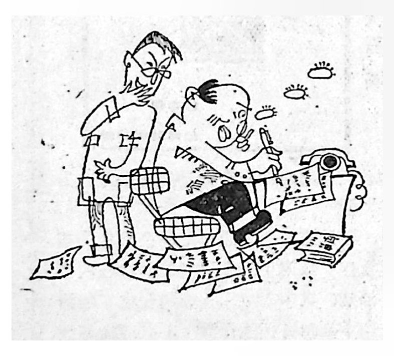

和非 《人事》1987年第1期（总第16期），第48页
负负得正（插图）
Two Negatives Make a Positive (illustration)
- Passage illustrated
回到办公室，对着那倒霉的稿子一端详，恍然大悟了：文稿被通篇改过，原文已被“斧正”得面目全非，动词与宾语相悖，主语和谓语不搭配，一句话被腰斩成两句，两句话又被连成一气，三百字的短文简直成了“初中学生语病大全”。
Back in his office he took a close look at the ill-fated draft and suddenly understood: the whole text had been revised, “corrected” beyond recognition. Verbs clashed with their objects, subjects did not agree with predicates, one sentence had been chopped in two and two sentences run together; the three-hundred-character piece had become a “compendium of junior-high grammar mistakes.”From the short story 负负得正 (“Two Negatives Make a Positive”) by Chong Jiu, on the same page. 重九《负负得正》，同页
- Description
- Illustration for the story: a section chief scribbles corrections over a draft while an older clerk in glasses stands behind him, frowning; discarded drafts litter the floor.
- Note
- 负负得正, “two negatives make a positive,” is the rule of arithmetic. In the story a clerk's draft is mangled by his new section chief, rejected by the bureau chief, and approved without a single change when he quietly resubmits the original.
- Artist
- He Fei 和非
- Published in
- 《人事》1987年第1期（总第16期）, p. 48
- Themes
- Paperwork and documents · Bureaucratism · Story illustrations

Cite
He Fei, “负负得正（插图）” [Two Negatives Make a Positive (illustration)], Renshi (Personnel) 《人事》, 1987, no. 1, p. 48.